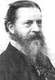

Philosophy Pages
| Dictionary | Study Guide | Logic | F A Q s | ||
|---|---|---|---|---|---|---|
| History | Timeline | Philosophers | Locke | |||
| Philosophy Pages
| Dictionary | Study Guide | Logic | F A Q s | ||
|---|---|---|---|---|---|---|
| History | Timeline | Philosophers | Locke | |||
|

Peirce Life and Works . . Belief . . Reality . . Pragmatism Bibliography Internet Sources |
The most significant indigenous philosophical movement of the United States is pragmatism. Pursuant to discussions of the "Metaphysical Club" at Harvard (which also included William James and Oliver Wendell Holmes as members), Charles Sanders Peirce proposed an important set of methodological principles for scientific investigation.
Noting that the pace of progress in science is often accompanied by confusion about its underlying principles, Peirce suggested in The Fixation of Belief (1877) that this confusion can be eliminated by devoting appropriate attention to the structure of logical inference. This, in turn, Peirce understood to be nothing other than a habit of mind that leads us toward the truth.
According to Peirce, all human inquiry is a struggle against the irritation of uncertainty or doubt. Feeling keenly dissatisfied by any suspension in judgment, we invariably seek to eliminate it by forming a belief, to which we then cling firmly even in the face of evidence to the contrary. So powerful is this urge to believe something in every circumstance that many people (as Bacon had noted centuries before) adopt beliefs upon whatever seems ready-to-hand, including individual interest, appeals to authority, or the dictates of a priori reasoning. But Peirce—rebelling against the excessive rationalism of Hegel, argued that reliance upon such principles is bound to distract us from what matters.
Productive human inquiry, Peirce maintained, must be grounded firmly in
reality; only then will our beliefs tend to correspond with the facts.
Inquiry of this kind is the process described by scientific method—a systematic set of suggestions that guide us in the acquisition of habits of belief that tend to conform to the ways in which our experiences are most likely to turn out.
Although the alternative methods offer many personal advantages, Peirce noted, only science selects for acceptance a belief that is true in the sense that "if acted on it should . . . carry us to the point we aim at and not astray."
Preference for such beliefs is the starting-point for Peirce's pragmatism.
In a sequel article entitled How to Make Our Ideas Clear (1878), Peirce applied similar principles to the nature of our conceptions of the world. Decrying the obscurity and confusion surrounding us of the notion of clear and distinct ideas in traditional logic, Peirce proposed a new way of thinking about our mental contents:
Consider what effects which might conceivably have practical bearings we conceive the object of our conception to have. Then, our conception of these effects is the whole of our conception of the object.This principle arises directly from the notion of belief as a habit of thinking that tends to provide a suitable guide to action. But the examples of its application Peirce presented make it even more clear that his pragmatic principles govern the very meaning, as well as the truth, of our beliefs.
In this paper, however, Peirce made it clear that the notion of truth involves not only an appropriate pragmatic connection with reality for the individual believer, but also entails a social relation with other believers.
As each one of an indefinitely large number of individual people engages in scientific investigation, their habits of belief will—over the long run—tend to converge upon the same conception of the world, one that most clearly corresponds with reality.
As Peirce noted, even human stubbornness, deception, and error can only delay, not completely prevent, our eventual acknowledgement of the natural order.
Having failed to gain the academic employment he desired, Peirce in his later years came to resent the greater popular attention that James achieved for pragmatism. In What Pragmatism Is (1905) Peirce correctly claimed credit for having invented the name of the movement—only to disavow it, claiming to prefer "pragmaticism" as a more descriptive title for his own philosophical method.
The method itself remained clear, however, with its firm basis in experimental reasoning, its determination of the meaning of concepts by reference to their consequences for future observation, and its hope for the eventual convergence of human opinion.
In fact, Peirce declared even more directly that ontological claim failing to have clear implications for future experience must be dismissed as utterly meaningless.
Since his more technical logical writings have only recently come to the attention of scholars who can appreciate them, it was this deliberately anti-metaphysical spirit that constituted Peirce's lasting legacy to American philosophy.
| History of Philosophy | |||||||
|---|---|---|---|---|---|---|---|
| Previous | Next | ||||||